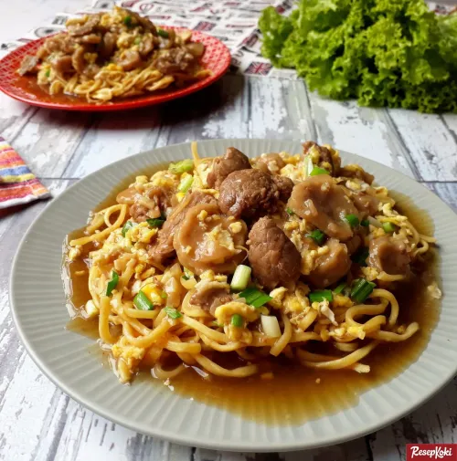

Resep Ifu Mie Basah

Selain rasanya yang lezat, menu khas oriental ini juga digemari banyak orang karena cara pembuatannya yang sederhana. Ifumie menggunakan mie telur sebagai bahan utamanya. Setelah direbus, mie digoreng hingga garing dan terlihat seperti sarang.
Mie ini kemudian disiram dengan tumisan kuah kental yang berisi aneka bahan hewani dan sayuran. Tidak heran, masakan ini terlihat seperti tumisan capcay yang diberi tambahan mie.
Bahan Masakan (untuk 4 porsi)
- Mie telur kering - 2 keping
- Daging has dalam, iris tipis - 150 gram
- Bakso sapi, iris-iris - 10 buah
- Telur, goreng orak-arik - 2 butir
- Bawang bombay, cincang halus - 1/2 buah
- Bawang putih, cincang halus - 2 siung
- 3 butir telur ayam, kocok lepas
- Jahe, memarkan - 2 cm
- Minyak wijen - 1 sdt
- Tepung maizena, larutkan dengan sedikit air - 1 sdm
- Minyak, untuk menumis - 2 sdm
- Air - 500 ml
Bumbu
- Saus tiram - 1 sdm
- Merica bubuk - 1/2 sdt
- Kecap asin - 1 sdt
- Kecap manis - 1 sdt
- Gula pasir - 1 sdt
- Garam - 1/2 sdt
Cara membuat
- Seduh mie dengan air panas lalu tiriskan. Susun mie jadi bentuk sangkar melingkar, lalu goreng dalam minyak panas hingga kering dan kaku. Angkat dan tiriskan.
- Panaskan minyak. Tumis bawang bombay, bawang putih, dan jahe hingga harum.
- Masukkan daging. Aduk-aduk hingga berubah warna.
- Masukkan bakso dan semua bumbu. Aduk rata.
- Tuang air. Aduk dan masak hingga mendidih. Koreksi rasanya.
- Masukkan telur orak arik. Aduk rata.
- Tuang larutan maizena dan minyak wijen. Aduk hingga meletup-letup. Matikan api.
- Tata mie dalam piring saji. Tuang kuah ke atasnya.
- Siap disajikan.